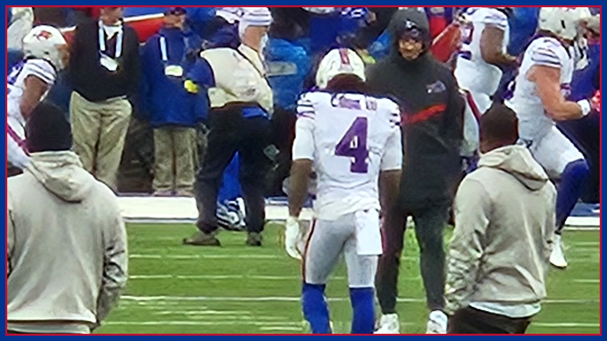

James Cook needs one normal Sunday to pass LaDainian Tomlinson. Miami just lost three defensive tackles.
James Cook has rushed for at least 75 yards and a touchdown in eight straight games, tying John Riggins, George Rogers and LaDainian Tomlinson, per the Bills' official site. One more normal Sunday against a Miami defense that just lost three interior linemen puts him alone in second place in NFL history — with Terry Allen's record of 10 next.

James Cook does not need a career day on Sunday to make NFL history. He needs a normal one. When the Miami Dolphins (1-8) visit the Buffalo Bills (8-1) on Sunday, Nov. 22 at 1 PM ET at Highmark Stadium, Cook needs 75 rushing yards and one rushing touchdown — his season averages are 107.9 yards a game — to do something no running back has done in 20 years. Cook has hit both marks in eight straight games, a streak the Bills' official site notes ties John Riggins in 1983 and LaDainian Tomlinson in 2006, with George Rogers (1985-86) also at eight, per the Democrat and Chronicle's record list. One more Sunday and Cook stands alone in second place in NFL history, one game behind Terry Allen's record of 10 straight (1995-96), per Buffalo Rumblings. Film Room has spent three weeks writing about Buffalo's defense. This week, the most important film in Orchard Park is a running back who keeps turning ordinary Sundays into record-book problems.
Start with the Jets tape, because it shows why this streak is not a stat-padding accident. Cook led the NFL in Week 10 with 157 rushing yards and a touchdown, per the Bills' official advanced-stats breakdown, and the touchdown was a 74-yard sprint down the right sideline — the longest run of his career and the second-longest rush in the league this year. Next Gen Stats had him at 21.56 miles per hour on the play, his fastest top speed of the season, per the same breakdown. The expected-yards model gave that outside zone run 10 yards; Cook took 74, good for plus-64 rushing yards over expected on a single carry and plus-75 for the game — the highest total of any rusher in Week 10 — which pushed his season total to plus-167, fourth-most in the NFL, per the Bills. He averaged 8.7 yards a carry, added a plus-5.2 rushing EPA (second-highest in Week 10) and created an extra 4.1 yards per carry over expected, per the same breakdown. That is not a back falling forward into a streak. That is a back breaking the model's math once a week.
The streak is also built in the trenches, and the Jets game is the clearest picture of it yet. Buffalo led the league in Week 10 with 4.09 rushing yards before contact per attempt, per the Bills' breakdown — Cook was getting into clean space before a defender touched him — and the Bills were stopped for no gain or a loss on just 3.1 percent of rushes, the NFL's second-lowest run-stuffed rate that week. New York knew what was coming and loaded up anyway: Buffalo faced a stacked box of eight or more defenders on 46.9 percent of plays, the second-highest rate in the league, and still ran the ball on 59.3 percent of its snaps, the fifth-highest run rate of the week, per the Bills. For the season, Cook sits at 971 rushing yards on 187 carries — 5.2 yards per carry and 107.9 per game — with nine rushing touchdowns, per Athlon Sports' Week 11 breakdown, and his rushing touchdown against the Jets also tied the Bills' franchise record with his eighth consecutive game with a rushing touchdown, per the Bills' official recap. Defenses are selling out to stop a streak, and the streak is eating the extra defender for lunch.
Now look at what is waiting for him in the middle of Miami's defense, because this is where Sunday's matchup stops being fair. The Colts just ran for 172 yards on the Dolphins last week with Jonathan Taylor and Seth McGowan, per Athlon Sports — and that was before Miami's interior fell apart. The Dolphins placed defensive linemen Zeek Biggers and Jordan Phillips on injured reserve on Tuesday after both were hurt in that 24-22 loss to Indianapolis, per the Democrat and Chronicle, and defensive tackle Zach Sieler was already lost for the season — three interior defensive linemen gone from a defense that now has to hold the middle with Kenneth Grant and a practice-squad call-up against the NFL's second-ranked rushing offense, per Athlon. Buffalo averages 152.67 rushing yards per game, second in the league, and leads the NFL in rushing touchdowns at 2.22 per game, per NBC Sports' preview. Film Room will keep the receipt, though: Miami still ranks sixth in EPA per run allowed, per Sports Illustrated via Athlon, and linebacker Jordyn Brooks leads the Dolphins with 84 tackles, per Athlon. The Dolphins' run fits have been better than their record. The question Sunday is whether a gutted tackle rotation can keep those fits intact for four quarters against the league's hottest back.
Cook's workload may grow for a second reason, and it is sitting on Thursday's practice report. Tight end Dalton Kincaid — Buffalo's leading receiver — missed practice for the second straight day Thursday with thumb and ankle injuries, per the Democrat and Chronicle, and backup running back Ray Davis remained limited with a hamstring injury, per the same report; cornerback Christian Benford (groin), linebacker Dorian Williams (calf) and safety Damar Hamlin (toe) also missed Thursday, with Friday's final designations and Sunday's inactives still to come. If Kincaid cannot go, the middle-of-the-field passing game that stretches defenses away from the box shrinks with him — and the answer, all season, has been Cook: more carries, more screens, more of the offense running through No. 4. Head coach Joe Brady is not entertaining trap-game talk either way. "I think it's always been disrespectful to the players and the profession when people think one game is less important or going to be easier," Brady said Wednesday, per Athlon Sports via the Bills' official site.
There is a team record riding shotgun here, too. A win Sunday gives Buffalo its first 9-1 start since 1991, per Buffalo Rumblings, and keeps the Bills on top of the AFC with the Bengals, Jaguars and Chiefs all sitting at 7-2 behind them, per the Democrat and Chronicle. The ideal script writes itself: lean on Cook early, let him chase 75 and a score behind a line that just produced the league's best yards-before-contact week, build the lead, and get him rest in the fourth quarter with Kansas City arriving on Thanksgiving night — four days later. That is not looking past Miami. That is what a run game this good is for in late November: it shortens games, protects a banged-up roster and travels into January.
So here is the Film Room watch list for Sunday. The yards should come at Cook's pace — at 107.9 a game, the 75-yard line is a third-quarter question, not a fourth-quarter sweat. The touchdown is the swing play, the one that turns a strong afternoon into sole possession of second place, past Riggins, Rogers and Tomlinson, with Terry Allen's 10 straight suddenly live on Thanksgiving night against the Chiefs. Twenty years since Tomlinson did it. Eight straight Sundays and counting. One normal James Cook game is all that stands between Buffalo and a little more room in the record book. Go Bills — and get every Dolphins fallout and record update in your inbox Monday morning with The BNC Blitz.
The BNC Blitz is free: the day's Bills news, one stat that matters, and one take, every morning. Join to keep reading — and never miss the end of a story again.